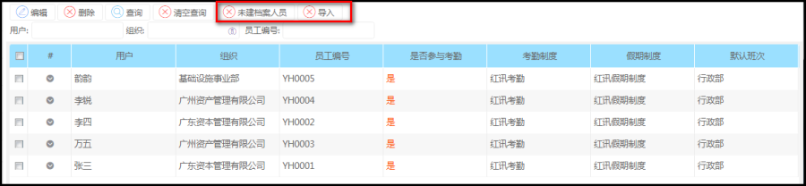
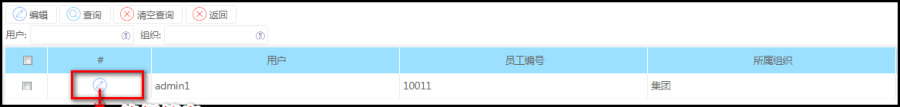
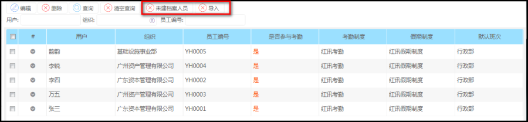
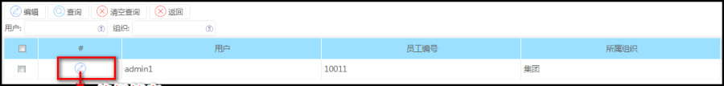

功能描述
对员工考勤信息的维护，设置相应的考勤制度，假期制度，是否参与考勤，原则上是一个员工对应一个考勤档案，
操作步骤
菜单路径：考勤管理--->日常管理--->考勤档案

未建档案人员，查询未建立考勤档案的员工，建立对应的员工考勤档案
点击未建档案人员进入以下页面

对员工考勤信息的维护，设置相应的考勤制度，假期制度，是否参与考勤，原则上是一个员工对应一个考勤档案，
菜单路径：考勤管理--->日常管理--->考勤档案

未建档案人员，查询未建立考勤档案的员工，建立对应的员工考勤档案
点击未建档案人员进入以下页面
